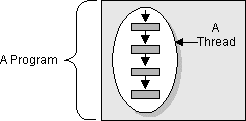
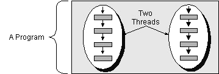

Feedback Form
| Start of Tutorial > Start of Trail > Start of Lesson | Search Feedback Form |
All programmers are familiar with writing sequential programs. You've probably written a program that displays "Hello World!", or sorts a list of names, or computes a list of prime numbers. These are sequential programs: each has a beginning, an execution sequence, and an end. At any given time during the runtime of the program there is a single point of execution.A thread is similar to the sequential programs described previously. A single thread also has a beginning, a sequence, and an end and at any given time during the runtime of the thread, there is a single point of execution. However, a thread itself is not a program; it cannot run on its own. Rather, it runs within a program. The following figure shows this relationship.

Definition: A thread is a single sequential flow of control within a program.
There is nothing new in the concept of a single thread. The real hoopla surrounding threads is not about a single sequential thread. Rather, it's about the use of multiple threads in a single program, running at the same time and performing different tasks. This is illustrated by the following figure:
 The HotJava Web browser is an example of a multithreaded application. Within the HotJava browser you can scroll a page while it's downloading an applet or image, play animation and sound concurrently, print a page in the background while you download a new page, or watch three sorting algorithms race to the finish. You are used to life operating in a concurrent fashion...so why not your browser?
Some texts use the name lightweight process instead of thread. A thread is similar to a real process in that a thread and a running program are both a single sequential flow of control. However, a thread is considered lightweight because it runs within the context of a full-blown program and takes advantage of the resources allocated for that program and the program's environment.
As a sequential flow of control, a thread must carve out some of its own resources within a running program. (It must have its own execution stack and program counter for example.) The code running within the thread works only within that context. Thus, some other texts use execution context as a synonym for thread.
| Start of Tutorial > Start of Trail > Start of Lesson | Search Feedback Form |